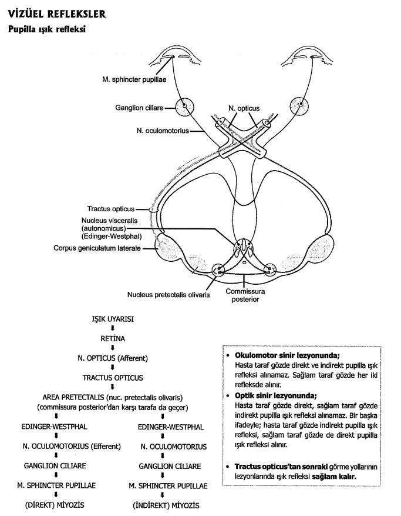
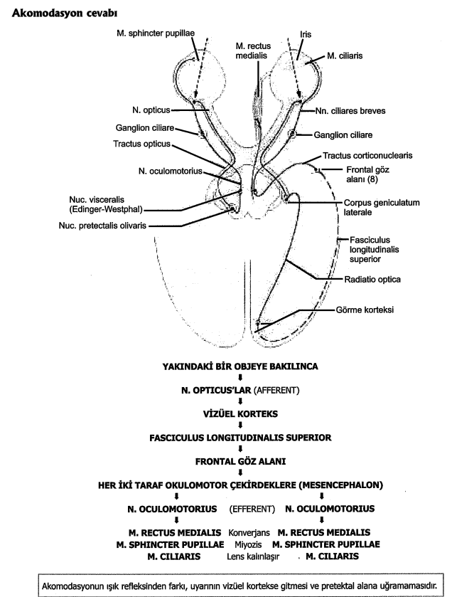
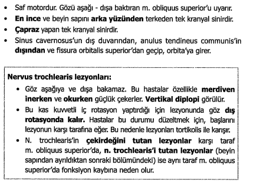
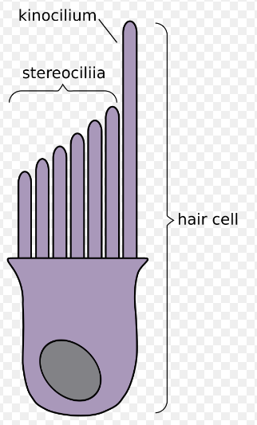
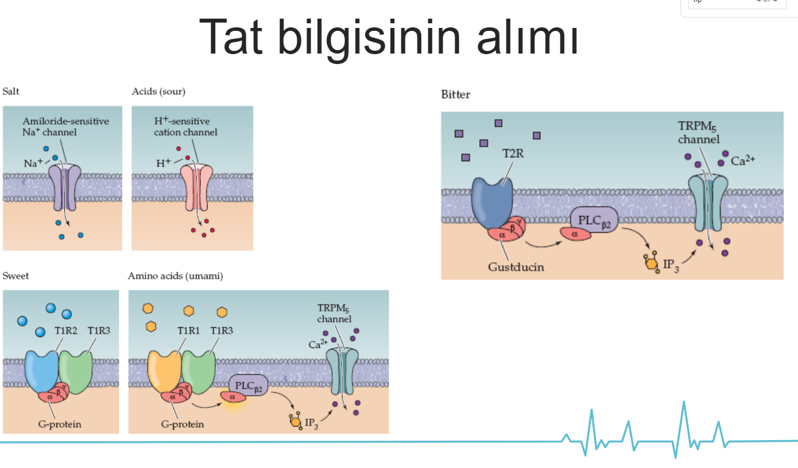
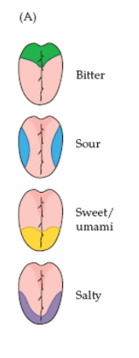
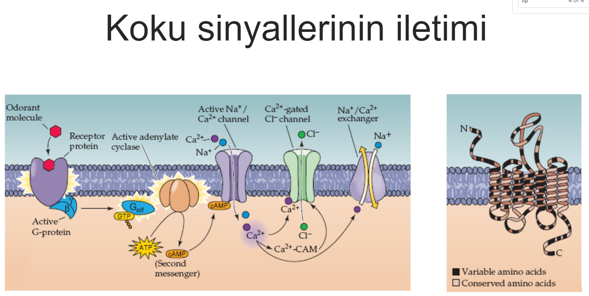

görme
Pupiller Işık Refleksi 4 nörondan oluşur.
1.Nöron: Retinadan => sup. kollikulus seviyesindeki pretektal nükleus
2.Nöron: Pretektal nükleus =>Edinger-Westphal nükleusa (CN3 parasempatik nükleusu)
3.Nöron: Edinger-Westphal nükleusu => silier ganglion
4.Nöron: Silier gangliyon => sfinkter pupilla


CN5(Maxillaris), IOF
Zygomaticus, IOF
CN2(n.opticus), for. opticum
CN3+CN4+CN5oph+CN6, SOF
Zinn halkası içinden, CN3+CN5oph(lacr ve front hariç)+CN6 + vena ophtalmica superior
Zinn halkası dışından, CN4+CN5(lacr+front)
lens, yüzey ektoderm
orbita tabanı blowout kırığı + çift görme = m. rectus inferior tuzaklanması
pupilla sempatik innervasyonu preganglionik lifleri ve gittikleri ganglion, T1-Ganglion Cerviale Superius
koniler eksensel ışınlara daha duyarlı./ hızlı yanıt, kısa bütünleştirme zamanı/ardışık ateşlemeler hızlı
göz kapağı elevasyonu ve silliyer kaslar - CN3-oculomotorius
göz kapağı kapama - CN5-facialis
retina dekolmanı ayrılanlar pigment tabakası / rod ve koni h. tab.
zinn ligament, zonule
choroid / sclera , gevşekler
optik kadeh -gelişir-> diencephalon'dan
retina'da asetilkolin salgılayan hücre, amakrin
primer görsel korteks, 17
wound repair, corneoscleral limbus
tectobulbar yolların tutulumu, konsensüel ışık refleksi kaybı
lamina cribrosa, sklera'daki en zayıf yer
direkt veya indirekt pupiller reflekste pretectal'e ulaşan uyarı m. sphincer pupillae'ye n. oculomotorius ile iletilir.
retina pars seca ve pars optica sınırı = ora serrata
nasal yarı çaprazlar
temporal yarı ipsilateral
melanin sentezi/a vitamin esterleştirilmesi/rod ve konilerin disklerinin fagositozu/retina kan bariyeri

dış, paries membranacus, membrana tympanica
üst, paries tegmentalis, tegmen tympani
alt, paries jugularis, n. glossopharyngeus timpanik dalı
medial, paries labyrinthicus, plexus tympanicus/prominentia canalis nervi facialis/promontorium tympani/ fenestralar
arka, paries mastoideus, m. stapedius, chorda tympani/ canalis nervi facialis
ön, paries caroticus, a. carotis int/ tuba auditivae buraya açılır
inkus ve malleus - 1. faringeal arkus / stapes - 2. faringeal arkus
faringeal tüp ve timpanik boşluk, 1. faringeal poş
dış kulak yolu , 1. faringeal yarık
korti, ektoderm
Ultimately, the otic vesicle will differentiate to form all of the components of the membranous labyrinth and the internal ear structures associated with hearing and balance.
insan işitme, 20-20000
desibel, ses şiddeti
stria vaskülaris, endolenf'in iyon kompozisyonunu sağlar.
timpanik membran, dış kısmı epidermis ile kaplı.
corti organı, ductus cochlearis'te scala media'dadır.
endolenf artışı, vertigo
vestibulum : recessus ellipticus içerisinde utriculus altta bulunan recessus sphericus içerisinde sacculus
primer işitme korteksi , 41
orta kulak kemikçik fonksiyon: yüzey alanı küçülür hareket gücü artar.
otolitler, sakkulus ve utrikulusun makulasındadırlar.
M. transversus auriculae - M. obliquus auriculae
concha auricularis = n. vagus, r. auricularis

Hair cells—sensory cells sitting on top of the basilar membrane—ride the wave. (frekans)
Dış tüylü hücrelerin sterocilia'larının uç kısımları membrana tectorialis içerisine gömülmüş durumdadır; iç tüylü hücrelerdeki stereocilia'lann uç kısımları ise membrana tectorialis'in hemen altında ve endolympha içerisinde serbest olarak bulunur.
duyusal sinirler ile sinaps yapan tat reseptör hücresi yalnızca tip 3 reseptörlerdir
tat almayan, papilla filiformis
tip II reseptörde ATP, paneksin kanal ile hücreler arası boşluğa geçer
tat reseptörü nörotransmitterlerinden biri serotonin


?tip 2 reseptör atp hücrelerarası paneksin?
brodmann 34, part of entorhinal area
koku belleği , entorhinal korteks

stratum bazale ve spinozum'da aşırı hücre çoğalması, epidermis'in kalınlaşıp hızla dökülmesi=psöriazis(sedef)
meissner cisimciği bulunduğu yer=papiller dermis
kıl folikülleri , stratum basale'den yani stratum germinativumdan oluşur. bu katman aynı zamanda yenilenmeyi sağlar.
langerhans en çok stratum spinosumda.
is a screening test for hearing performed with a tuning fork. It can detect unilateral (one-sided) conductive hearing loss (middle ear hearing loss) and unilateral sensorineural hearing loss (inner ear hearing loss).
is a color vision test for detection of red-green color deficiencies.
en alttaki hypoglossal
• Yüzey ektoderminden: Lens, kornea epiteli,
konjunktiva, gözyaşı bezleri
• Nöral ektodermden: Vitröz cisim (kısmen),
Retina-iris-silyar cisim epitelleri, pupil kasları,
optik sinir
• Mezodermden: Sklera, iris-silyar cisim-kornea
–koroid stromaları, optik sinirin bağ dokusu,
vitröz cisim, orbita, kan damarları, göz
kapakları